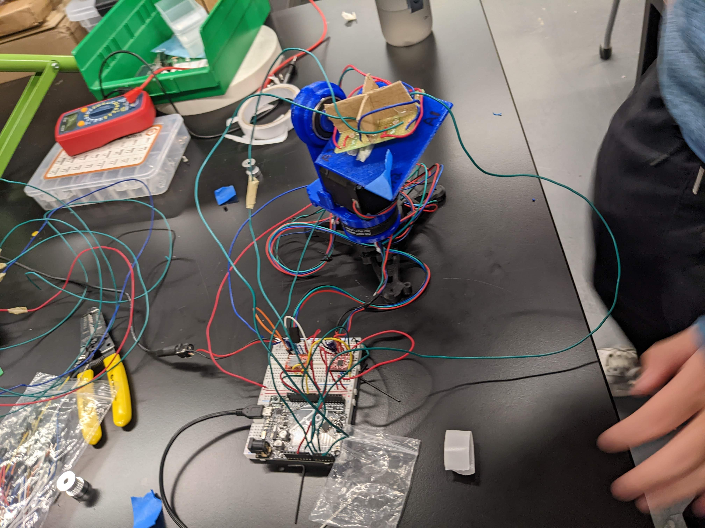

### Week 7: Testing the Solar Tracker Circuit
### Monday - 10/24: Fixing All the Shorts & Open Circuits
This week, we took our soldered new circuit and attached the two PCBs together with hot glue. We then glued on pieces
of the cruciform onto the circuit for a completed circuit. When we ran the arduino code on the circuit however,
we found that we weren't getting proper readings for all of our photoresistors. The main issue we ran into
was the fact that the wires weren't soldered in very robustly so that there were sometimes potential shorts but more often,
there were open circuits. We ran a lot of continuity tests on the board to check the connections, checked the photoresistor values,
and then continued debugging and trouble shooting the resistor quadrants that weren't giving us appropriate readings.
We noted that in general, the photoresistor values showed a high number around 400 when uncovered in the classroom. Once we covered
the photoresistor, the value displayed on the Arduino would drop to around 120. When we ran a multimeter on the circuit to measure
the resistor values, we found that the resistance of the photoresistor goes up when we covered the photoresistor.
Takeaways/Improvements for the Future:
- The PCB we chose to use was not of the best quality so it was very hard to create solid joints that secured the wires.
In addition, it was very easy for the connection on the PCB for a row to come out of the board itself.
- We can test out the functionality of the circuit and debug using the multimeter by checking all the connections
systematically using a continuity test as well as measuring the resistances across resistors.
### Wednesday - 10/26: Getting The Motors Turning
We continued to debug our circuit and by first 10 minutes of the class, we had a working circuit that
gave us readings for each of the resistors. Next, we test our feedback systems with the motors so we fastened
the PCB to the stand and ran the Arduino code. Initially, we found that the bottom motor controlling the
equitorial direction could move but the top motor in the azimuthal direction would not move. In addition, even the bottom motor
that could move had a hard time turning and would mostly be able to turn only in one direction. After some trouble shooting,
we found that this was due to a wiring issue on our breadboard meaning that the azimuthal stepper motor controlling
was not being powered from the 8V bus. After connecting this, we found that both motors were able to turn.
We found however another issue in that the motors were slipping constantly. We realized that the screws that secured the shaft
were not tightened so we took apart the stand and tightened these screws. Afterwards, we found that the stand
was able to rotate much more freely and smoothly.
Now the only thing left to do was to check the performance of our algorithm. We needed to make some adjustments in our code
based on the relative positions of the sensors to ensure the degree of motion we wanted. The sensors are now responsive in the
azimuthal direction but for the equitorial position, we still need to wrap up some modfiications and testing.
Here's a picture of our current setup:
